Unofficial - F5 Certification Exam Prep Material Source | Edit on
Getting Started with the F5 Certification Program 03/29/19¶
Congratulations on beginning your adventure into F5 Certifications
The F5 Certified! Program was developed to foster individual professional development through a high-quality, credible technology certification. Certifications are earned by completing a series of exams to verify skills in application delivery, design, installation, and management of F5 technology. These certifications provide a competitive advantage for candidates and employers in the marketplace. There is increasing industry recognition of the integrity, credibility, and quality of F5 certifications and the individuals who obtain them.
Introduction¶
About this Guide
This introduction guide is for candidates who are just getting started with the F5 Certification Program. It will help guide you through registration, preparing for your first certification exam, and scheduling. When you register for the program, you will be assigned an F5 Candidate ID number. The F5 Candidate ID number is your primary identifier for the program and is 12 characters long formatted like the following:
F50000000000
As you read through this guide, you will find resources and embedded links. At the end of the handbook is a list of the full URLs associated with the embedded links.
Certifications Summary
The F5 Certified! Program is progressive and builds on the skills and knowledge demonstrated in previous exams. The graphic below shows how certification levels progress through the program. Requirements for each certification are shown beside the image.
| 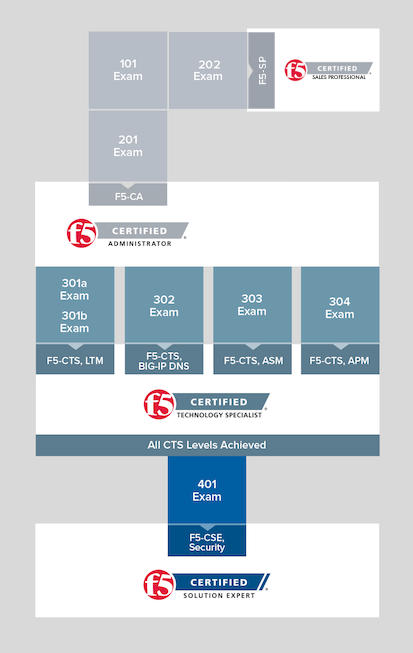 | F5 Certified BIG-IP Administrator (F5-CA) F5-CA, BIG-IP Administrator Requirements
F5 Certified Sales Professional (F5-SP) F5-SP, F5 Sales Professional Requirements
F5 Certified Technology Specialists (F5-CTS) F5-CTS, BIG-IP, Local Traffic Manger Requirements
F5-CTS, BIG-IP DNS Requirements
F5-CTS, BIG-IP Application Security Manager Requirements
F5-CTS, BIG-IP Application Policy Manager Requirements
F5 Certified Solution Expert (F5-CSE) F5-CSE Security Requirements
|
Getting Registered in the F5 Program¶
Every candidate must have an F5 Certification ID as well as a Pearson Vue/F5 ID in order to participate in the F5 Certified! Program.
Process to get an F5 Certification ID:
The candidate must go to certification.f5.com and create an account.
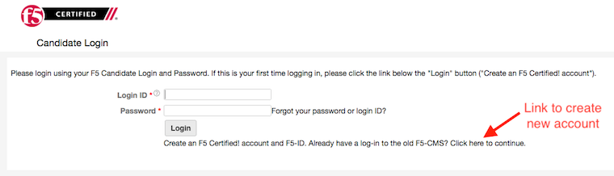The candidate will receive an email from F5 with their F5 Certification ID in it. The email will have the candidate go back out to the certification.f5.com website and login with the new account and set the password and agree to EUA. Once they complete the instructions in this email, F5 will kick off a backend process to create an F5 Pearson Vue ID for them.
The candidate will then receive another email with their F5 Pearson Vue ID. The email will have the candidate go to the Pearson Vue website to Activate the new account.
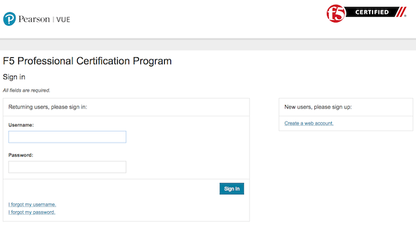
{kind=link}
Activate your Pearson VUE account:
Certification exams are administered at Pearson VUE Testing Centers. To schedule an exam at a Pearson VUE Testing Center, you will first need to activate your account with Pearson VUE for the F5 Certified! Program. Please note that if you already have an account with Pearson VUE, the F5 Certified! account will be a different one.
When you registered on the F5 Candidate Portal, you received an email from the testing vendor, Pearson VUE. The sender was PearsonVUEConfirmation@Pearson.com. This email was sent within 24 hours of registering in the F5 Candidate Portal. If you cannot find the email from PearsonVUEConfirmation@Pearson.com, please contact support@cert.f5.com.
In the email from the testing vendor, you will see the username and temporary password which will allow you to complete the process of activating your Pearson VUE account:
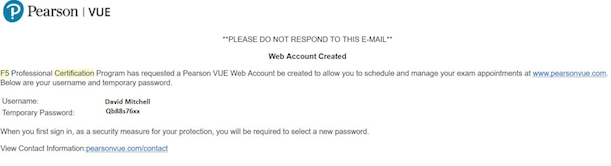Use this link to go to Pearson VUE’s F5 Certified! page. Click on the “Sign In” button on the right side of the page:
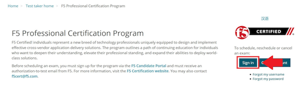You’ll now be on the Sign in page. Enter your username and temporary password and click the “Sign in” button:
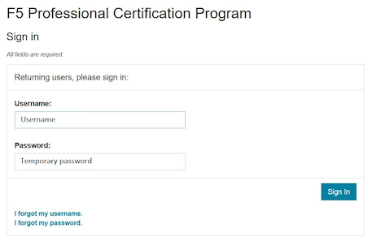A new screen will appear, and you will be prompted to create a permanent password. You should see a screen confirming that the account sign in was successfully updated, and you be automatically signed in to your Pearson VUE account home page:
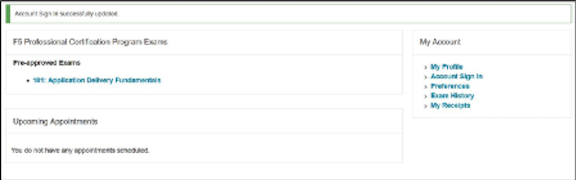To sign out of your Pearson VUE account, go to the Home page and click on “Sign Out”:
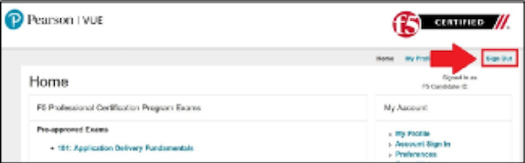
Your Pearson VUE account for the F5 Certified! Program is now active. You can now schedule your first exam (see Scheduling the Exam below).
Your First F5 Certification¶
F5 Certified Sales Professional (F5-SP) There are two paths to take to for your first F5 certification. Each path is separate from the other. The first professional certification in the program is the F5 Certified! Administrator, BIG-IP (F5- CA). This certification consists of two exams: 101 - Application Delivery Fundamentals and 201 - TMOS Administration. Exam 101 is a prerequisite to Exam 201; no certificate is issued after passing Exam 101.
The sections that follow give a brief overview of the first two exams and the skills needed to pass them.
Exam 101 - Application Delivery Fundamentals
This is the first exam required to achieve either F5 Certified BIG-IP Administrator status or F5 Certified Sales Professional. All candidates must take this exam to move forward in the program.
Successful completion of the 101-Application Delivery Fundamentals exam acknowledges the skills and understanding necessary for day-to-day management of Application Delivery Networks (ADNs). This exam identifies candidates that possess the knowledge that is necessary to work with F5 products and technologies.
Summary description of the minimally qualified candidate (MQC)
The MQC has a basic understanding of network fundamentals, protocols, and common traffic management concepts. The MQC also understands the basic concepts of F5 technology as applied to network fundamentals, protocols, and traffic management (for example, TMOS).
The MQC can do the following without assistance:
- Articulate the advantages of a full application proxy.
- Explain the seven layers of the Open Systems Interconnection (OSI) model.
- Describe valid uses/methods of HTTP.
- Identify and define the components of TMOS.
Prerequisite for exam:
- None
Exam 201 - TMOS Administration
This is the second exam required to achieve Certified F5 BIG-IP Administrator status. Candidates must have passed the 101-Application Delivery Fundamentals exam in order to be eligible for the 201 exam.
Successful completion of the BIG-IP Administrator exam identifies candidates who can independently perform day-to-day operations and basic troubleshooting of TMOS-based devices in various application environments after it has been installed, configured, and implemented.
Summary description of the MQC
The MQC is capable of performing day-to-day operations of TMOS-based devices which have already been installed. The MQC is also capable of basic troubleshooting of a TMOS-based device in order to provide full, accurate, and appropriate information to senior engineers and/or F5 support.
The MQC can do the following without assistance:
-Enable a virtual server that has already been defined.
-Locate where iRules are facilitated within QKView.
-Use QKView troubleshooting tools (for example, obtain a Transmission Control Protocol (TCP) dump and a qkview using QKView, and upload a qkview to BIG-IP iHealth).
Prerequisite for exam:
- Exam 101 - Application Delivery Fundamentals
Exam 202 - Pre-Sales Fundamentals
This is the second exam required to achieve F5 Certified Sales Professional status. All candidates must have passed the 101-Application Delivery Fundamentals exam in order to achieve F5 Certified Sales Professional status.
Successful completion of the 202 Pre-Sales Fundamentals exam acknowledges the skills and understanding necessary for technical selling of F5 solutions.
Summary description of the MQC
The MQC has a proven track record of successfully selling F5 solutions. The MQC should have a working understanding of F5 solutions and be able to:
Prepare and deliver technical presentations explaining products or services to customers and prospective customers. Confer with customers to assess business and technical requirements, and collaborate with sales teams to understand customer landscape and provide technical sales advisement. Plan and design solutions to meet customer needs/requirements, and align solution with existing customer initiatives and infrastructure. Recommend and explain proposed solutions and benefits to customers. Understand market awareness that differentiates industry solutions (Security, Cloud, ADC).
Prerequisite for exam:
- Exam 101 - Application Delivery Fundamentals
Exam Preparation¶
Available Resources
To prepare for certification exams, there are a number of resources available to candidates. Seven of these resources are listed below. Please know that there are no specific “exam prep” classes that guarantee you will pass an exam the first time. Earning an F5 certification typically requires both hands-on experience as well as studying the material. It is important to note that the responsibility of preparation lies with you, the candidate.
AskF5
AskF5 is a centralized knowledge base of documents, links, and resources—including sections on the F5 Certified! Program. You can find official exam blueprints, community-created study guides, program policies, exam descriptions, and more on AskF5. Most of the information within this guide is pulled from the certification pages found on AskF5.
Exam Blueprint
Each exam has its own unique blueprint that was developed by subject matter experts (SMEs). The blueprint provides a detailed breakdown of the skills and knowledge that you should possess in order to pass the exam. Blueprints can be used to identify areas for additional study and are best used in conjunction with the exam study guides.
Exam Study Guides
Exam-specific study guides are available here on F5 Cloud Docs as well as on AskF5 in PDF format. These study guides feature a collection of information and resources that may be helpful for exam preparation. Study guides have been created by the F5 Certified! community and are not refreshed at the same time as exams. The content here on F5 Cloud Docs will be the most current study guide content available.
Learn F5
Learn F5 provides several free web-based trainings appropriate to use to prepare for Exam 101. A good place to start with F5 web-based training is the “Getting Started” series.
LinkedIn Groups
F5 Certified! LinkedIn groups are a great place to engage with a community of candidates and Certification Team support. In the various LinkedIn groups, you may ask or answer questions, provide and gather resources, and give feedback on the program. The “F5 Certified! Professionals” group is the main group, and there are separate study groups for each exam. To find a group, log into your LinkedIn account and perform a search. The two groups that are the most helpful for getting started are:
- F5 Certified! Professionals
- F5 Certified! 101 Study Group
As you become more familiar with the F5 Certified! Program and advance to subsequent exams, you can access additional F5 Certified! groups that have been created specifically for the next level that you wish to pursue.
The following is strictly prohibited in the LinkedIn groups: sharing specific exam questions or topics; detailed exam questions; and sharing exam scenarios, situations, examples, or exhibits. Failure to follow these guidelines will lead to expulsion from the certification program.
Practice Exams
F5 Certified! practice exams are designed to help gauge preparedness for the production (“real”) exams. They contain the same number of items, time constraints, and level of difficulty. They simulate the proctored, production exam experience. In addition, practice exams provide a score report with section-level guidance on your performance. This score report is only available with the official F5 Certified! practice exam. A nominal fee is charged for practice exams. An example of a practice exam score report is shown below:
The feedback in the score report provides a general assessment of your readiness for each section in the exam. Feedback is provided based on the following general levels of preparedness:
- Below: You are not prepared for this section. More study is required.
- Borderline: You demonstrate understanding, but not consistently. More study would benefit your exam performance.
- Meets: Suggests that you have sufficiently mastered this section.
This section-level feedback is intended only as guidance. While earning a “Meets” score for all sections in the practice exam suggests that you would likely pass the real exam, it does not guarantee it. A practice exam is merely a tool to help you evaluate where you would benefit from additional preparation.
How to Purchase a Practice Exam:
Practice exams can be purchased via ExamStudio, a third-party vendor with which we have partnered to deliver our practice exams. You must be a registered F5 Certified! candidate to get an ExamStudio account allowing you to purchase practice exams.
Please note, your ExamStudio account and your F5 Certified! account are not the same, although both will use your F5 Candidate ID as the username.
When you registered on the F5 Candidate Portal you received an email from support@ examstudio.com. The email contains a link and credentials for ExamStudio. (Please note: After registering, it can take 24-48 hours to receive this email.)
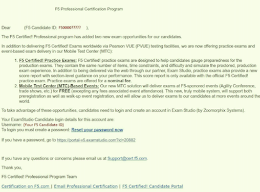When you follow the link, you must first create a password by clicking the “Reset your password now” link in the email. You will be redirected to a site where you will be prompted to create and confirm a new password:
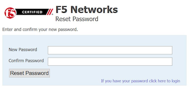Once your password is created, you will be automatically logged in and directed to the home page of your ExamStudio account. To complete a purchase of practice exams, proceed to the “Shop Front” tab:
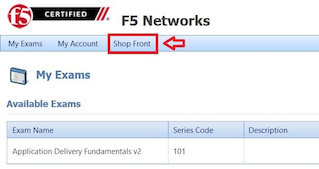In the Shop Front you will see a list of the available practice exams, details around allowed attempts, and the price of practice exams available for purchase (in USD). To purchase a practice exam, you must select the exam and agree to the “Terms and Conditions” before clicking the “Checkout Now” button:
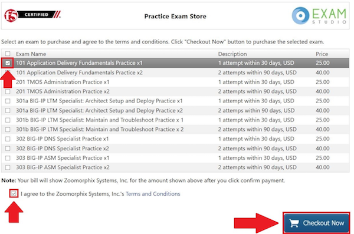After you have selected the practice exam, accepted the terms and conditions, and clicked “Checkout Now” you will be directed to a Payment Methods page. Accepted forms of payment are PayPal or bank card. After you have entered your payment information, click “Confirm Payment”:
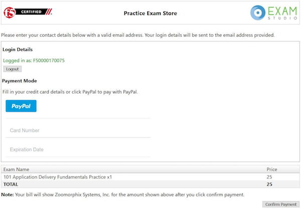Next you will see a purchase confirmation page:
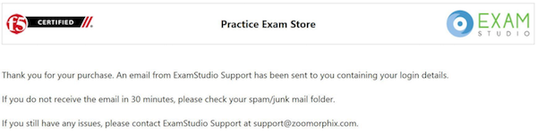Click on the “My Exams” tab and you will see your practice exam listed in the “Available Exams” section. When you are ready to start your practice exam click the “Start Exam” link under “Actions”: Note - As soon as you click on the “Start Exam” link, your practice exam will begin.
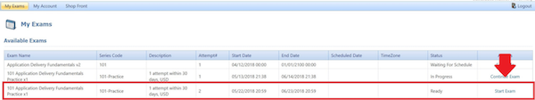
F5.com
An overview of basic information about the F5 Certified! Program is available on the F5 corporate website, f5.com. This website contains information that will help you understand the F5 product suite and provides a high-level overview of the F5 Certified! Program.
F5 Candidate Portal
The first step to certification was creating an account in the F5 Candidate Portal. If you are reading this handbook, you have already completed this step and have been assigned a Candidate ID. The F5 Candidate Portal continues to be a helpful resource even after creating an account. You can log into the F5 Candidate Portal to get program updates, track your certification progress, check exam scores, update your personal information, and schedule exams at Pearson VUE testing centers.
Additional Resources
A commercially available study guide has been created for Exam 101. The book is titled F5 Networks Application Delivery Fundamentals Study Guide by Philip Jonsson and Steven Iverson. It is available for purchase in either hardcopy or electronic formats. Please know that the commercially available study guide was written and produced independent of the F5 Certified! Program. It may not align with the current version of the exam, although exam versioning is of minor concern for content included in Exam 101.
Scheduling the Exam¶
Test Centers
Pearson VUE is the official global test delivery partner for the F5 Certified! Program. Pearson VUE testing centers are secure and conveniently located. To find a Pearson VUE testing center near you, Pearson VUE provides a test center locator.
If you live more than 55 miles/100km from a Pearson VUE testing facility, you can request a test center closer to your location. Your request will be reviewed to determine if there is a closer facility that meets the security requirements for the programs.
To request an additional test center:
Log into the F5 Candidate Portal
Click on the “Test Center Additions” button.
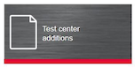
Do not use the “Submit” button at the bottom of the form. Instead, continue with the following steps:
- Download and complete the form.
- Email the form to Support@Cert.F5.com.
Once the F5 Certified! Team receives the completed form they will submit it to Pearson VUE. Keep in mind that making a request does not guarantee that a new test center will be opened.
NOTE: If the request is approved, it can take up to 30 days to open a new test center.
How to Schedule an Exam
Scheduling the Exam
Go to the F5 Candidate Portal here.
Log in to your account using the F5 portal credentials that you created when you first registered for the program.
Once you log in, click the “Schedule an exam” button:
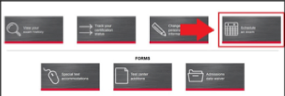A new page will give you the option to “click here” to schedule your exam:
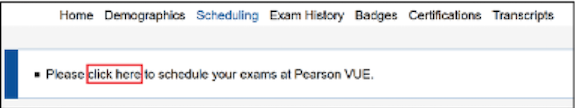This will direct you to the Pearson VUE sign in portal. Sign in with your Pearson VUE account credentials:
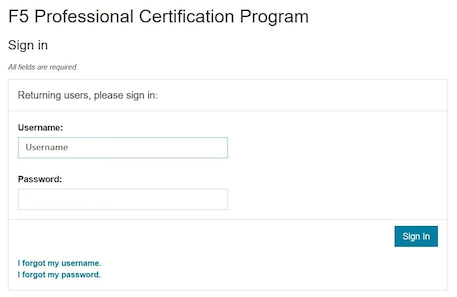You will see a screen displaying the exams for which you can schedule a testing date. Click the link embedded in the name of the exam (in this example, it is “101: Application Delivery Fundamentals”):
You will then see the following image, where you can view the Pearson VUE testing policies, as well as the price and available testing language. To proceed, click “Schedule this Exam.” (Note that the price for the testing is currently $135 USD or your local equivalent.)
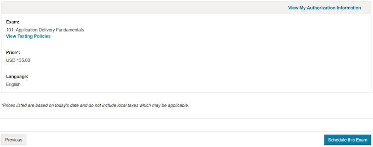Once you proceed to the next screen, the Pearson VUE portal will automatically find the closest test center to your entered location. From the options that appear, select the option most convenient for you and click “Next.” (If a test center is not found near your location, please see section 4.1 to request a new location.)
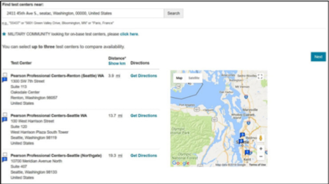From the options available, select the date and time that best works for you:
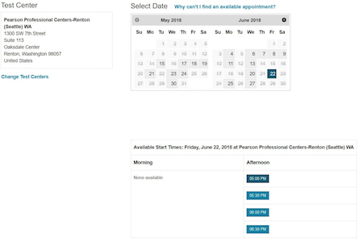Once the date and time has been confirmed, you will be taken to a checkout section where you can verify your selected options before clicking “Proceed to Checkout”:
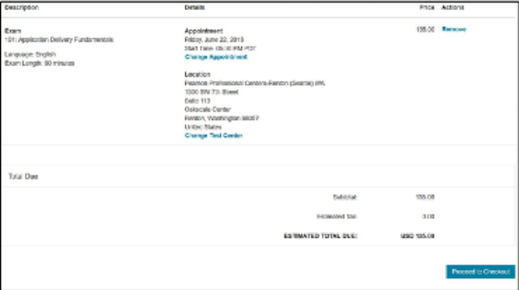Once you have completed the purchasing process, you will receive an email confirming your appointment details:
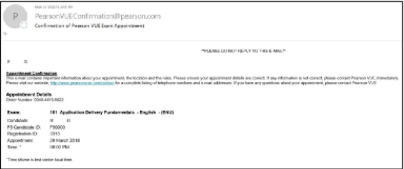
Changing a Scheduled Appointment
If you need to reschedule an exam, you must contact Pearson VUE at least 24 hours before the scheduled exam time. Pearson VUE’s customer service page lists contact details, including an online chat service.
Note: F5 cannot reschedule your exam for you. You must reschedule on the Pearson VUE website or contact them directly.
Test Site Requirements
Test site requirements are defined by Pearson VUE testing centers. Always check the Pearson VUE website for up-to-date information regarding test site requirements. Watch this video to help you prepare: What to expect in a Pearson VUE test center.
The following are examples of some test site guidelines:
- Personal items are not allowed in the testing room.
- Eating, drinking, smoking, talking, or disturbing other candidates is prohibited.
- Engaging in misconduct or other irregular activities may invalidate your score as well as existing certifications.
- An erasable note board and pen are provided for notes and calculations during the exam.
- Removing an erasable note board, or other provided items, from the testing area is an act of misconduct.
- Erasable note board and other exam materials may not be used before the exam starts.
- You will be monitored at all times during the exam.
- Candidates must keep personal identification (ID) with them at all times.
Identification Requirements
When taking an exam at a Pearson VUE testing center, you must bring two forms of valid, signed ID. One must be government-issued and include a photo. The name on the ID must match the name listed on the Pearson VUE account. If it does not match, please email F5 Certified! Support (support@cert.f5.com) to get your name changed before the exam. Please allow enough time before your exam appointment. When you sign in at the Pearson VUE testing center, they will confirm your identity by taking a photograph, having you sign a digital pad, and scanning your palm. The information you provide will be treated in accordance with the F5 Privacy Notice. If you prefer to opt out, please use the process shown below.
To request an admissions data waiver:
Log into the F5 Candidate Portal
Click on the “Admissions Data Waiver” button.
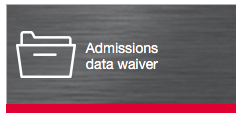
Do not use the “Submit” button at the bottom of the form. Instead, continue with the following steps:
- Download and complete the form.
- Send the form to Support@Cert.F5.com.
NOTE: In order to ensure the security of our program and prevent fraud, you may only opt-out of one (1) of the three (3) admissions data requirements.
Test Length and Number of Questions
Exam 101 — Application Delivery Fundamentals is 90 minutes long, with 80 multiple choice questions. Some items may include exhibits that will need to be opened and viewed before moving on to the next items. Scrolling (both vertical and horizontal) may be required before answering or moving on to the next item.
Exam Scoring¶
Preliminary Results
When you complete the exam, you will receive a preliminary “pass” or “fail” score report. This is only a preliminary result and is subject to change until official results are posted to your account in the F5 Candidate Portal.
When Final Results Are Available
You will receive an email notification of your final results. It could take up to 72 hours for this email to arrive. You can then log into the F5 Candidate Portal and click the “Exam History” tab to download and view your test results. It will show the percentage you answered correctly along with the required passing score.
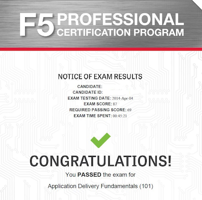Retake Policy
In the event of failing an exam one or more times, the following waiting periods apply:
- The first time you fail an exam, you must wait 15 days before taking the exam again.
- The second time, you must wait 30 days.
- The third time, you must wait 45 days.
- The fourth time, you must wait one year.
- The fifth time (or more), you must wait 90 days between retakes.
At the end of the waiting period, you will receive an email as soon as you are eligible to schedule a retake exam. Though you are required to wait the times detailed above, you can log in to Pearson VUE and schedule an exam before the end of the exam-hold period. This retake count is reset when you pass an exam.
Need Further Help?¶
If there are any questions or suggestions concerning the F5 Certified! Program or the content listed in this guide, please contact us at: support@cert.f5.com